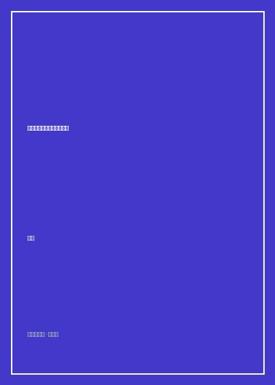

《我们为什么离正义越来越远》

总体观点
《我们为什么离正义越来越远》是一场极具穿透力的智性思想冒险。熊逸证明，'正义'从来不是一个悬在半空、人人都能一眼看清的绝对真理，而是一组彼此冲突、逻辑自洽却无法相互兼容的价值丛林。
作者借助电车难题、洞穴奇案、平权行动与财富分配等经典伦理困境，彻底粉碎了大众对'常识道德直觉'的盲目迷信。功利主义追求整体福祉最大化却践踏个体人权，康德义务论恪守绝对道德却在现实极端情境下陷入僵死，罗尔斯无知之幕在消除运气的同时间接惩罚了天分与努力。
全书揭示了人类文明深处的悲剧性底色：我们之所以离终极正义越来越远，恰恰是因为人类对自由、平等、秩序、繁荣等多重价值的执着追求，在现实世界中必然会撞上此消彼长的零和死局。直面悖论，保持谦卑与审慎的妥协，是现代法治文明唯一的成熟标志。
核心观点
-
1. 道德直觉的自相矛盾：电车难题背后的神经认知裂痕
掰动道岔救五个人和亲手把胖子推下天桥挡车，在数学期望上完全相同，人类道德直觉却给出截然相反的伦理判决，证明道德源于远古情绪脑而非纯粹理性。
脑成像研究显示，面对直接物理身体接触的伤害，大脑负责情绪恐惧的杏仁核剧烈激活，瞬间压制了负责理性利益计算的前额叶皮层。 -
2. 功利主义的滑坡深渊：将少数人作为幸福垫脚石的危险
如果正义的唯一度量衡是'最大多数人的最大幸福'，那么强行摘取一个健康流浪汉的器官救活五个身患绝症的科学家在逻辑上便难以被反驳。
分析古罗马斗兽场将早期基督徒喂给狮子让五万名市民狂欢取乐的案例，暴露了纯粹快乐加总主义对基本人权保护的致命破产。 -
3. 罗尔斯无知之幕的激进性：运气中立化的道德乌托邦
出生在富贵之家是运气，天生智商超群甚至天生具有勤奋坚毅的性格同样是基因与环境赋予的运气，因此任何基于天资的超额回报都不具有纯粹的道德正当性。
无知之幕要求立法者在不知道自己未来是健康还是残疾、聪明还是愚钝的前提下制定规则，逼迫全社会将不平等倾斜给处境最不利者。 -
4. 诺齐克自我所有权的阻击：征税等同于强迫劳动的反驳
自由至上主义坚信每个人对自己的身体与劳动成果拥有绝对所有权，国家以再分配为名强行征收高额累进税，在道德本质上就是强迫部分人为他人无偿劳动。
诺齐克以篮球明星张伯伦门票提成自愿契约为例：若两万观众自愿多付两毛钱看球，政府凭什么以平等名义剥夺张伯伦的合法收入。 -
5. 多元正义的诸神之争：学会与不可消除的冲突共存
我们必须彻底放弃毕其功于一役找到一套放之四海而皆准的万能正义公式的狂妄幻想，正义的真谛在于程序保障下的持续协商与妥协平衡。
现代民主宪政之所以珍贵，不是因为它能给每个人提供完美的终极答案，而是它提供了一个让不同正义观和平打官司而不至于拔刀相向的竞技场。
全书思维导图 · 知识脉络树
全书结构
-
导论：正义的幻觉与思想实验的解剖刀
梳理人类关于正义探寻的原始直觉，引入电车难题与洞穴奇案等经典思维工具，打破理所当然的日常道德自信。
以十九世纪真实的英国海难食人案（达德利与史蒂芬斯案）切入，探讨在极端绝境下牺牲最虚弱的孤儿船员是否具有正当防卫或避险抗辩权。 -
第一章 功利主义的算盘：边沁的快乐计算与密尔的救赎
详尽解构功利主义的数学模型，分析将所有人类价值降维为快乐单位（Utilitarian calculus）的致命漏洞与晚期修正。
剖析当代烟草公司在政府控烟听证会上出示的经济报告：老年吸烟者早逝反而替国家养老金和医保省下了数十亿开支的荒诞算计。 -
第二章 康德的绝对命令：不容讨价还价的理性铁律
阐释康德先验唯心主义伦理学，人是目的而不是手段，剖析'哪怕凶手追问朋友藏匿处也绝不能撒谎'的极端纯粹性困局。
对比康德对谎言的零容忍教条，与日常生活中为了挽救癌症晚期病人心理防线而善意隐瞒病情的普遍伦理宽容之间的巨大张力。 -
第三章 罗尔斯的正义契约：无知之幕后的政治想象力
深入拆解《正义论》两大原则：平等自由原则与差异原则，探讨机会均等与结果补偿之间的微妙边界。
分析美国大学平权法案（Affirmative Action）在录取中对少数族裔的配额优待，如何引发亚裔学生诉哈佛大学歧视的司法大战。 -
第四章 自由与所有权之争：诺齐克对福利国家的致命一击
呈现自由至上主义对罗尔斯理论的尖锐阻击，捍卫最小国家（Night-watchman state）原则与基于合法转移的历史正义原则。
探讨国家是否应该强制国民系安全带与缴纳养老金：自由主义者认为这属于侵犯个人对自己身体做愚蠢决策自由的家长主义暴政。 -
结语：在正义的废墟上重建审慎与谦卑
总结全书论辩，呼吁现代公民走出道德洁癖的二元阵营对立，在理解对手逻辑合理性的基础上培育包容理性的公共生活。
熊逸在文末写道：'正义的真正敌人从来不是邪恶，而是自以为代表了绝对正义、从而拒绝倾听任何异议的狂热信念'。